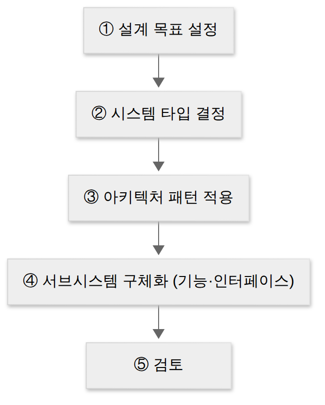
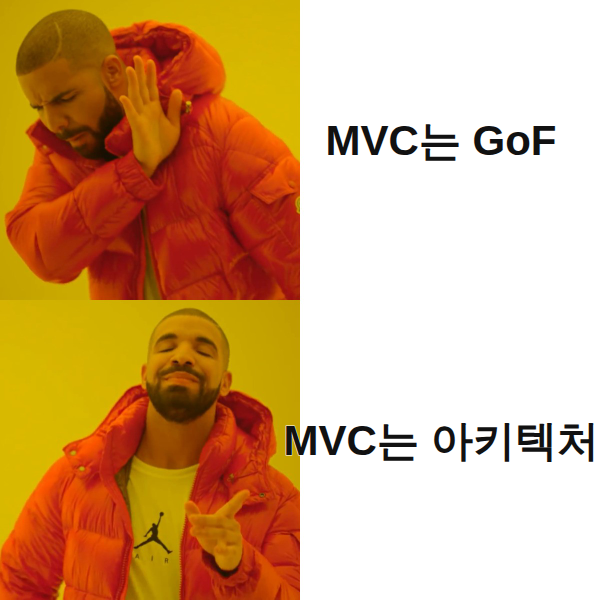
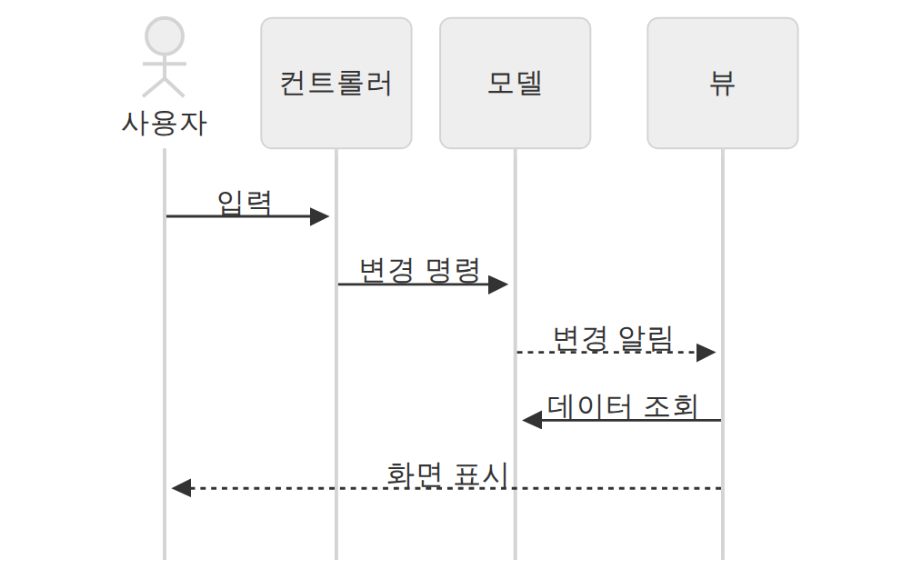
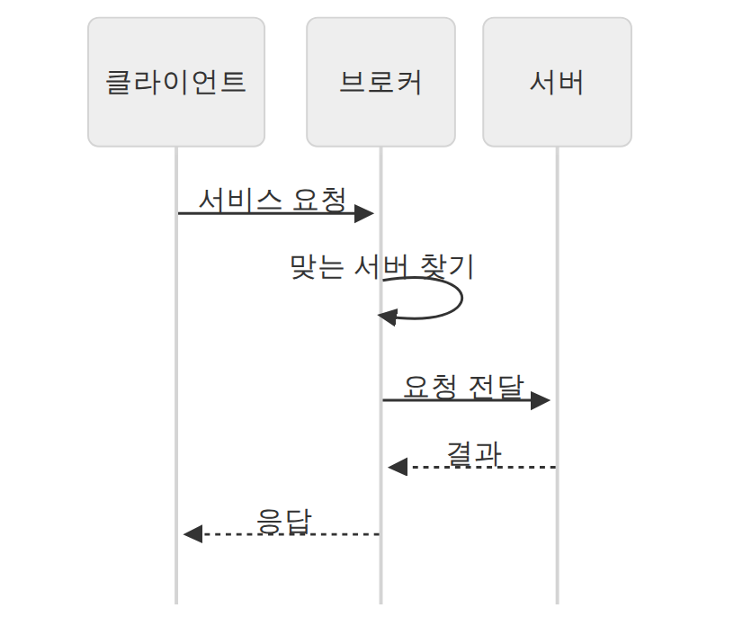
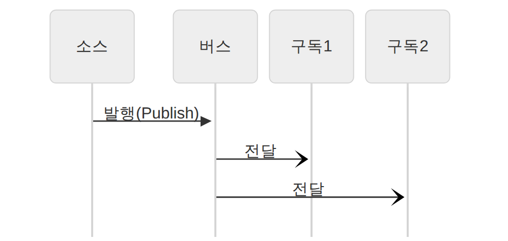

D011 · 소프트웨어 아키텍처 — 설계 원리·품질 속성·패턴 8종·4+1 뷰
A3 어제는 “아키텍처 설계 = 상위 설계”까지 봤어요. 오늘은 그 상위 설계의 원리·품질·패턴을 봐요. 현업에서 익숙한 내용이 대부분이라, 시험이 쓰는 분류 이름과 패턴 8종 키워드만 정확히 맞추면 돼요. 패턴 8종은 거의 매회 나오는 단골이에요.
- 소프트웨어 아키텍처의 정의와 설계 원리 4가지(모듈화·추상화·단계적 분해·정보 은닉), 추상화 3종(과정·데이터·제어)을 구별한다
- 품질 속성을 시스템·비즈니스·아키텍처 3측면으로 나누고 대표 항목을 분류한다 (ISO 9126 품질 특성과 혼동하지 않는다)
- 아키텍처 패턴 8종(레이어·클라이언트-서버·파이프-필터·MVC·브로커·P2P·이벤트 버스·마스터-슬레이브)을 구조 그림과 키워드로 구별하고, MVC가 GoF 디자인 패턴이 아님을 안다
- 설계 과정(설계 목표 설정 → 시스템 타입 결정 → 아키텍처 패턴 적용 → 서브시스템 구체화 → 검토)과 시스템 타입 4종을 알아본다
- 4+1 뷰(논리·프로세스·구현(개발)·배포(물리) + 유스케이스)를 무엇을 보는 뷰인지로 구별한다
1. A3 지도 — 오늘 위치
2. 아키텍처란 — 그리고 설계 원리 4가지
건물로 치면 골조예요. 나중에 바꾸려면 비용이 가장 많이 드는 결정이라 상위(예비) 설계에서 먼저 정해요.
왜 ‘설계 원리’가 필요할까
큰 시스템을 한 번에 머릿속에 다 넣고 설계할 수는 없어요. 회원·상품·주문·결제·배송이 얽힌 쇼핑몰을 처음부터 함수와 테이블 단위로 다 정하려 하면 설계가 끝나지 않아요. 그래서 설계자들은 “어떻게 나누고, 어디까지 먼저 정하고, 무엇을 감출지”에 대한 공통 규칙을 따르는데, 이것이 설계 원리예요.
네 가지 원리는 따로 노는 게 아니라 한 흐름이에요. 먼저 큰 덩어리와 본질만 정하고(추상화), 위에서 아래로 한 단계씩 쪼개면서(단계적 분해), 쪼갠 결과를 독립된 단위로 만들고(모듈화), 각 단위의 속은 밖에서 못 보게 감춰요(정보 은닉).
① 모듈화
시스템을 기능 단위의 독립된 조각(모듈)으로 나누는 거예요. 현업으로 치면 패키지·클래스·서비스 단위로 나누는 일이에요. 잘 나누면 한 사람이 한 모듈만 이해하고 고칠 수 있고, 다른 프로젝트에서 재사용하기도 쉬워요.
다만 나누는 크기의 균형이 중요해요. 너무 잘게 나누면 모듈 수가 많아져 모듈끼리 연결하고 통합하는 비용이 커지고, 너무 크게 나누면 모듈 하나가 비대해져 그 안을 개발·수정하는 비용이 커져요. 그래서 “모듈 수가 늘면 모듈당 비용은 줄고 통합 비용은 는다”는 관계가 시험에 나와요. 모듈을 얼마나 잘 나눴는지 재는 기준이 내일 배우는 결합도(모듈끼리 얼마나 얽혔나)와 응집도(모듈 안이 얼마나 한 목적으로 뭉쳤나)예요.
② 추상화
문제의 본질적인 부분만 먼저 뽑아 설계하고, 세부 사항은 나중으로 미루는 거예요. “주문을 처리한다”를 먼저 정하고, 그 안에서 재고를 어떻게 잠그는지는 뒤에서 정하는 식이에요. 무엇을 감추고 대표 표현으로 바꾸느냐에 따라 과정·데이터·제어 추상화로 나누는데, 아래 표에서 따로 봐요.
③ 단계적 분해
니클라우스 비르트(Niklaus Wirth)가 제안한 하향식(Top-down) 설계 전략이에요. 가장 위의 큰 기능에서 시작해 하위 기능으로 한 단계씩 쪼개 내려가요. 쇼핑몰 → 주문·결제·배송 → 주문 안의 장바구니 확인·재고 확인·주문 생성 …처럼요. “상세한 내용은 가능한 한 뒤 단계로 미룬다”는 점에서 추상화와 짝을 이뤄요. 반대 방향인 상향식은 아래 비교 상자에 있어요.
④ 정보 은닉
모듈 내부의 자료 구조와 처리 로직을 밖에서 볼 수 없게 감추고, 미리 정한 인터페이스(공개 메서드·API)로만 주고받게 하는 거예요. 자바의 private 필드와 public 메서드, API만 공개하는 마이크로서비스가 같은 생각이에요. 데이비드 파나스(Parnas)가 정리한 개념으로 알려져 있어요.
이렇게 하면 한 모듈의 속을 바꿔도 인터페이스가 그대로인 한 다른 모듈은 영향을 받지 않아요. 그래서 수정·테스트·유지보수가 쉬워지고, 내일 볼 “결합도 낮추기”의 가장 기본적인 방법이 돼요.
한 장 요약 — 위 설명을 카드로 줄이면 이렇게 돼요.
※ 설계 원리 목록은 자료마다 조금 달라요. 시나공·흥달 계열은 오늘 본 네 가지(흥달은 분할과 정복을 더해 다섯), 일부 강의 요약은 단순성·자기서술성·추상화·정보은닉으로 적어요. 추상화·정보 은닉은 어느 쪽에도 들어가요.
추상화 3종
| 종류 | 뜻 | 현업 감각 |
|---|---|---|
| 과정 추상화 | 자세한 수행 과정은 정의하지 않고 전체 흐름만 파악할 수 있게 설계 | 함수 이름만 보고 호출 — sendMail() 안은 몰라도 됨 |
| 데이터 추상화 | 데이터의 세부 속성·용도는 정의하지 않고, 데이터 구조를 대표하는 표현으로 대체 | ADT·interface — Queue가 배열인지 리스트인지 모름 |
| 제어 추상화 | 이벤트 발생의 정확한 절차·방법은 정의하지 않고 대표하는 표현으로 대체 | 이벤트 핸들러 등록 — 언제 어떻게 호출될지는 프레임워크가 처리 |
3. 품질 속성 — 시스템 · 비즈니스 · 아키텍처
설계 원리대로 구조를 짰다면, 그 구조가 정말 “좋은지” 판단할 기준이 필요해요. 그런데 같은 시스템이라도 보는 사람마다 “좋다”의 뜻이 달라요. 운영팀은 “장애 없이 빠르게 돌아가나”, 경영진은 “제때 적은 비용으로 나와서 오래 쓰나”, 설계자는 “설계가 하나의 일관된 생각으로 짜였고 실제로 만들 수 있나”를 봐요. 시험은 이 세 관점을 시스템·비즈니스·아키텍처 측면이라는 이름으로 나눠요.
시스템 측면 — 돌아갈 때의 품질
시스템이 실제로 운영될 때 드러나는 특성이에요. 성능(응답 시간·처리량), 보안(허가된 사람만 접근), 가용성(장애 없이 쓸 수 있는 시간 비율, 예: 월 99.9%), 사용성(쓰기 쉬운가), 변경 용이성(요구가 바뀌면 얼마나 쉽게 고치나)이 대표예요. D001에서 본 비기능 요구사항과 거의 같은 목록이라고 연결해 두면 쉬워요.
비즈니스 측면 — 돈과 일정의 품질
기술이 아니라 사업 관점의 품질이에요. 시장 적시성(경쟁사보다 늦지 않게 출시할 수 있나), 비용과 혜택(들인 비용 대비 얻는 이익), 예상 시스템 수명(얼마나 오래 쓸 수 있나)이 대표예요. 아키텍처 결정이 출시일과 비용을 좌우하기 때문에 품질 속성에 들어가요. 예를 들어 처음부터 마이크로서비스로 잘게 나누면 확장성은 좋아지지만 출시가 늦어지고 비용이 늘 수 있어요.
아키텍처 측면 — 설계 자체의 품질
설계도 그 자체가 잘 만들어졌는지를 봐요. 개념적 무결성(전체가 하나의 일관된 설계 철학을 따르나 — 여기저기 다른 스타일이 섞이지 않았나), 정확성·완결성(요구사항을 빠짐없이 정확하게 반영했나), 구축 가능성(주어진 인력·기간·기술로 실제로 만들 수 있나)이 대표예요.
한 장 요약 — 세 측면을 그림과 표로 정리하면 이래요.
↔ 표가 넓어요. 옆으로 밀어서 보세요
| 측면 | 대표 항목 (공통) | 한 자료에만 있는 항목 | 판단 키워드 |
|---|---|---|---|
| 시스템 | 성능, 보안, 가용성, 사용성, 변경 용이성 | 기능성, 확장성, 시험 용이성, 배치성, 안정성 | 운영 중 시스템이 어떻게 동작하나 |
| 비즈니스 | 시장 적시성, 비용과 혜택, 예상 시스템 수명 | 목표 시장, 공개 일정, 기존 시스템과의 통합 | 언제 출시·얼마·얼마나 오래 |
| 아키텍처 | 개념적 무결성, 정확성·완결성, 구축 가능성 | 변경성, 시험성, 적응성, 일치성, 대체성 | 설계가 하나의 일관된 개념인가, 정말 만들 수 있나 |
4. 설계 과정 — 참고

두 번째 단계의 시스템 타입은 네 가지로 소개돼요.
※ 설계 과정 순서와 시스템 타입은 확인한 자료가 한 곳뿐이라 오늘 문제로는 내지 않아요. 흐름만 눈에 익혀 두세요.
5. 아키텍처 패턴 — 구조의 정석
아키텍처 패턴은 자주 만나는 구조 문제에 대한 참조용 전형적 해결 방식이에요. 아키텍처 스타일·표준 아키텍처라고도 불러요. 서브시스템들과 각자의 역할, 서로의 관계 규칙·지침까지 담고 있어요. 패턴을 쓰면 개발 시간이 줄고, 검증된 구조라 품질을 예측하기 쉽고, 이해관계자끼리 소통도 쉬워져요.
패턴 8종 — 실제 모양
패턴별로 풀어 보기
그림을 보면서 하나씩 읽어 보세요. 패턴마다 어떤 구조인지 → 왜 좋은지 → 대가는 뭔지 → 현업 예 순서예요.
① 레이어(Layered) — 시스템을 역할별 계층(표현·비즈니스·데이터 등)으로 쌓고, 각 계층은 바로 아래 계층의 기능만 쓰고 바로 위 계층에만 기능을 제공해요. 그래서 계층 하나를 통째로 바꾸기 쉬워요(데이터 계층의 DB만 교체 등). 대신 요청이 여러 계층을 차례로 거쳐야 해서 성능 손해가 생길 수 있어요. 스프링의 Controller → Service → Repository, 그리고 네트워크의 OSI 7계층이 대표 예예요.
② 클라이언트-서버 — 서버 하나와 여러 클라이언트로 이뤄져요. 클라이언트가 요청하면 서버가 처리해 응답하고, 서버는 요청을 기다리며 항상 켜져 있어요. 데이터와 처리가 서버에 모여 관리가 쉽지만, 서버가 병목이나 단일 장애점이 될 수 있어요. 웹 브라우저와 웹 서버, 모바일 앱과 API 서버가 예예요.
③ 파이프-필터 — 데이터가 처리 단계(필터)를 차례로 통과하고, 단계 사이를 파이프가 이어요. 각 필터는 입력을 받아 변환해 내보내기만 하고 다른 필터를 몰라서, 필터를 재사용하거나 순서를 바꾸기 쉬워요. 대가는 단계마다 데이터를 넘기며 형식을 바꾸는 변환 오버헤드예요. 리눅스의 cat log | grep ERROR | sort, 컴파일러의 어휘 분석 → 구문 분석 → 코드 생성 단계가 그대로 이 패턴이에요.
④ MVC — 대화형 애플리케이션을 모델(데이터·핵심 로직), 뷰(화면 표시), 컨트롤러(사용자 입력을 받아 모델에 전달)로 나눠요. 같은 데이터를 표·차트처럼 여러 화면으로 보여 줄 수 있고(모델 하나에 뷰 여러 개), 화면과 로직을 따로 고칠 수 있어요. Spring MVC가 이름 그대로예요. 아래에 요청 하나가 흐르는 순서 그림이 따로 있어요.
⑤ 브로커 — 분산 환경에서 클라이언트와 서버 사이에 중개자(브로커)를 둬요. 클라이언트는 원하는 서비스만 브로커에 요청하고, 브로커가 그 서비스를 가진 서버를 찾아 연결해 줘요. 클라이언트가 서버가 어디 있는지 몰라도 되는 위치 투명성이 핵심이에요. CORBA, 원격 호출(RPC) 미들웨어가 예예요.
⑥ P2P(Peer-to-Peer) — 모든 참여자(피어)가 동등하게 클라이언트이자 서버 역할을 해요. 중앙 서버 없이 피어끼리 직접 자원을 주고받아요. 참여자가 늘수록 전체 자원도 늘어나지만, 전체를 관리하고 보안을 통제하기는 어려워요. 토렌트 파일 공유가 대표 예예요.
⑦ 이벤트 버스 — 이벤트를 만드는 소스가 특정 채널에 메시지를 발행(Publish)하면, 그 채널을 구독(Subscribe)한 리스너들이 각자 받아 처리해요. 발행하는 쪽은 누가 받는지 몰라도 돼서 결합도가 낮고, 새 기능은 구독만 추가하면 돼요. 구성 요소는 소스·리스너·채널·버스 네 가지예요. Kafka 토픽, 알림 시스템이 예예요.
⑧ 마스터-슬레이브 — 마스터가 일을 나눠 같은 구조의 슬레이브들에게 맡기고, 슬레이브가 낸 결과를 모아 최종 결과를 만들어요. 병렬로 빨리 처리할 수 있고, 슬레이브 하나가 실패해도 다른 슬레이브로 대신할 수 있어요(장애 허용). 병렬 컴퓨팅, 마스터 DB의 내용을 여러 슬레이브 DB로 복제하는 구성이 예예요.
한 장 요약 — 위 여덟 개를 한 표로 줄이면 이래요.
| 패턴 | 구조 한 줄 | 결정 키워드 · 대표 예 |
|---|---|---|
| 레이어 | 시스템을 계층으로 나누고, 마주 보는 두 계층 사이에서만 상호작용 | 계층 · 특정 계층만 교체 쉬움 예: OSI 7계층, 3-tier |
| 클라이언트-서버 | 서버 하나 + 클라이언트 여럿. 서버는 항상 요청을 기다림 | 요청-응답 · 서버 상시 대기 예: 웹 브라우저 ↔ 웹 서버 |
| 파이프-필터 | 데이터 처리 단계를 필터로 캡슐화하고 파이프로 연결 | 필터 재사용·재배치 쉬움 · 필터 간 데이터 변환 오버헤드 예: UNIX 셸 |, 컴파일러 단계 |
| MVC | 모델(핵심 기능·데이터) · 뷰(표시) · 컨트롤러(입력 처리, 모델에 명령) 분리 | 한 모델에 여러 뷰 · 대화형 앱 예: 웹 프레임워크(Spring MVC) |
| 브로커 | 중개자(브로커)가 요청에 맞는 컴포넌트를 찾아 사용자와 연결 | 중개 · 위치 투명성 · 분산 환경 예: CORBA, RPC 미들웨어 |
| P2P | 피어 하나가 클라이언트이자 서버. 중앙 서버 없음 | 피어 · 대등 · 분산 공유 예: BitTorrent, 블록체인 노드 |
| 이벤트 버스 | 소스가 채널에 메시지를 발행하면 그 채널을 구독한 리스너가 처리. 구성 = 소스·리스너·채널·버스 | 발행/구독(Pub/Sub) · 비동기 · 느슨한 결합 예: Kafka 토픽 구독, 알림 서비스 |
| 마스터-슬레이브 | 마스터가 같은 구조의 슬레이브들에 작업을 나누고 결과를 모음 | 분할 → 회수 · 병렬 · 장애 허용 예: DB 복제, MapReduce |
※ 기타 패턴으로 블랙보드(공유 지식 저장소에 여러 컴포넌트가 해답을 써 나감, 음성 인식)와 인터프리터(특정 언어로 작성된 프로그램 해석)도 가끔 선지에 나와요. 파이프-필터의 데이터 흐름은 그림처럼 한 방향이 기본인데, “양방향도 구현 가능”이라고 쓴 요약도 있어 자료마다 달라요. 방향을 단정하는 선지보다 필터·파이프·변환 오버헤드·UNIX 셸 키워드로 고르세요.

- 브로커 vs 이벤트 버스: 둘 다 가운데 무언가가 있지만, 브로커는 요청한 쪽에 맞는 서버를 찾아 연결해 주는 요청-응답이고, 이벤트 버스는 발행만 하면 구독자들이 받는 구조(발행자는 누가 받는지 모름)예요.
- MVC vs 레이어: MVC는 역할 3분할(입력·데이터·표시), 레이어는 위아래 계층 쌓기예요.
- “MVC는 GoF 디자인 패턴이다” ✕ — MVC는 아키텍처 패턴이에요. GoF 23개 목록에 없어요.
- “C/S는 클라이언트 하나에 서버 여럿” ✕ — 개수를 뒤집은 선지예요.
MVC — 요청 하나가 흐르는 순서

브로커 vs 이벤트 버스 — 가운데 있는 것이 하는 일
브로커: 요청을 받아 맞는 서버를 찾아 연결하고 응답을 돌려줘요(요청-응답, 위치 투명성).

이벤트 버스: 소스는 발행만 하고 누가 받는지 몰라요. 구독자들이 각자 비동기로 받아요(느슨한 결합).

6. 4+1 뷰 — 아키텍처를 보는 다섯 시선
왜 하필 여러 장으로 나눠 그릴까요? 같은 아키텍처라도 보는 사람마다 궁금한 게 달라서예요. 기획자는 “무슨 기능이 있나”, 개발자는 “코드를 어떤 모듈로 나눴나”, 운영자는 “서버 몇 대에 어떻게 올라가고, 동시에 몇 개가 도나”가 궁금해요. 한 장에 다 넣으면 아무도 못 읽는 그림이 돼요. 그래서 관점별로 따로 그리고, 그 그림들이 같은 시스템을 말하고 있는지 사용자 시나리오로 맞춰 보는 게 4+1 뷰예요.
아키텍처는 한 장의 그림으로 다 표현되지 않아요. Kruchten(1995)은 네 개의 뷰로 나눠 그리고, 유스케이스(시나리오) 뷰를 +1로 두어 나머지 넷을 묶고 검증하게 했어요.
- 논리 뷰 — 시스템이 어떤 기능을 제공하고, 그 기능을 어떤 객체·클래스가 맡는지 봐요. 주로 클래스 다이어그램으로 그려요.
- 프로세스 뷰 — 시스템이 실행될 때의 모습이에요. 어떤 프로세스·스레드가 동시에 돌고, 서로 어떻게 통신하며, 성능·확장성은 어떤지 봐요.
- 구현 뷰(개발 뷰) — 개발자가 보는 소스 코드·패키지·라이브러리 구성이에요. 어떤 모듈이 어떤 모듈에 의존하는지 봐요.
- 배포 뷰(물리 뷰) — 소프트웨어가 어떤 서버·네트워크에 올라가는지 봐요. 배치 다이어그램으로 그려요.
- 유스케이스 뷰(+1) — 사용자 시나리오로 나머지 네 뷰를 묶고 검증해요. 다른 뷰를 설계하는 출발점이기도 해서 “+1”로 따로 세요.
| 뷰 | 무엇을 보나 | 대표 UML |
|---|---|---|
| 논리 뷰 | 시스템이 제공하는 기능, 구성 객체와 관계 | 클래스, 상태 |
| 프로세스 뷰 | 실행 중 동작 — 동시성·분산·성능, 프로세스·스레드 간 통신 | 시퀀스, 통신, 활동 |
| 구현 뷰 = 개발 뷰 | 개발자가 보는 모듈·패키지 구성(소스·라이브러리 구조) | 컴포넌트, 패키지 |
| 배포 뷰 = 물리 뷰, 배치 뷰 | 소프트웨어가 올라갈 물리 노드와 네트워크 배치 | 배치 |
| 유스케이스 뷰 (+1) = 시나리오 뷰 | 시나리오로 나머지 네 뷰를 묶고 검증, 다른 뷰 설계의 출발점 | 유스케이스 |
※ 원 논문 이름은 Logical·Development·Process·Physical + Scenarios예요. 그래서 국내 자료마다 구현/개발, 배포/배치/물리처럼 이름이 달라요. 각 뷰를 누가 주로 보는지(사용자·설계자·개발자 등)도 자료마다 달라서 여기엔 적지 않았어요.
7. 시험 포인트 정리
- 아키텍처 = 구성 요소 + 관계 + 원칙 = 시스템의 골격, 상위(예비) 설계
- 설계 원리 = 모듈화 · 추상화 · 단계적 분해 · 정보 은닉, 단계적 분해 = Wirth의 하향식
- 추상화 3종 = 과정 · 데이터 · 제어
- “시장 적시성 · 비용 · 예상 수명” → 비즈니스 측면, “개념적 무결성 · 구축 가능성” → 아키텍처 측면, “성능 · 가용성 · 보안” → 시스템 측면
- “발행 · 구독 · 채널” → 이벤트 버스, “중개 · 위치 투명성” → 브로커
- “필터 · UNIX 셸 · 변환 오버헤드” → 파이프-필터, “모델 하나 · 뷰 여럿” → MVC
- “마주 보는 계층끼리만 · OSI” → 레이어, “클라이언트이자 서버” → P2P, “작업 분할 → 결과 회수” → 마스터-슬레이브
- 4+1 뷰의 +1 = 유스케이스 뷰, MVC ≠ GoF 디자인 패턴
- 참고: 아키텍처 평가 방법으로 ATAM(품질 속성 간 트레이드오프 분석)·SAAM(변경 용이성 중심)이 소개돼요.
8. 오답 복습 — D007 다시 보기 (D+1)
| 오답 | 헷갈린 것 | 바로잡기 |
|---|---|---|
| D007-1 | UI 표준 ↔ UI 지침 | 표준 = 시스템 전체에 공통 적용하는 화면 구성·화면 이동 규약. 지침 = UI를 개발할 때 지켜야 할 공통 조건·가이드라인. (사용자가 원하는 UI는 UI 요구사항) |
| D007-2 | 유연성 ↔ 직관성 | 직유학유 — 직관성(쉽게 이해) · 유효성(목적 달성) · 학습성(쉽게 배움) · 유연성(다양한 사용자·조작 방식 포용, 실수 방지·복구) |
원문은 D007 · UI 표준과 지침에 있어요. 오늘 3·4번이 이 두 오답의 변형 문제예요. 채점 결과 3번은 다시 틀려 10/14·10/20·11/03에 재확인하고, 4번은 통과해 10/19·11/02에 다시 확인해요.
9. 밀린 답장
D009·D010 답장이 아직 없어요. 오늘 문제와 함께 보내 주시면 한꺼번에 채점해서 오답 복습에 반영할게요. 그래서 오늘 새 범위 문제는 2개로 줄였어요.
- D009 · 주간 종합 복습 (10문항)
- D010 · 감성공학과 설계 모델링 (2문항)
확인 문제 (채점 완료 · 3/4)
- 주문 서비스가 ‘주문 완료’ 이벤트를 메시지 채널에 올리기만 하면, 그 채널을 구독하고 있는 재고·알림·포인트 컴포넌트가 각자 메시지를 받아 처리한다. 주문 서비스는 누가 받는지 알지 못하고, 새 컴포넌트는 구독만 추가하면 된다. 이 구조에 해당하는 아키텍처 패턴은?
정답·해설
② 이벤트 버스. 소스가 메시지를 발행하면 구독한 리스너가 처리해요. 브로커는 서비스 요청을 적절한 컴포넌트에 연결하고, 마스터-슬레이브는 작업을 분할·회수하며, 클라이언트-서버는 요청·응답 구조예요. - 소프트웨어 아키텍처 품질 속성 중 비즈니스 측면에 해당하는 것은?
정답·해설
③ 시장 적시성. 언제 시장에 출시할 수 있는지가 비즈니스 측면이에요. 가용성·성능은 시스템 측면, 개념적 무결성은 아키텍처 측면이에요. - UI 표준과 UI 지침에 대한 설명으로 옳은 것은?
정답·해설
④ UI 표준은 전체 화면에 공통 적용하는 구성·이동 규약이에요. 선택한 ②는 표준의 설명에 ‘지침’이라는 이름을 붙인 함정이에요. UI 지침은 개발할 때 지킬 공통 조건·가이드라인이고, ①은 UI 요구사항, ③은 정황 시나리오예요. - 공공기관 민원 앱이 터치·음성 입력·외부 키보드를 모두 지원하고, 신청서를 제출하기 전에 입력 내용을 다시 보여 주며 잘못 고른 항목을 되돌릴 수 있게 했다. 이 설계가 주로 따른 UI 설계 원칙은?
정답·해설
① 유연성. 다양한 입력 방식 수용과 실수 방지·복구가 핵심이에요. 직관성은 쉽게 이해, 유효성은 목적 달성, 학습성은 쉽게 배움을 뜻해요. D007-2 재확인 통과!
고른 뒤 답안 복사 → 디스코드 공부 채널에 붙여넣기 하면 돼요.
답장: 정처기 D011: 1)번호 2)번호 3)번호 4)번호